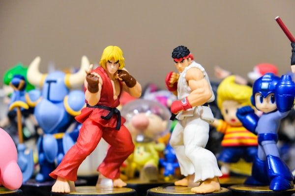
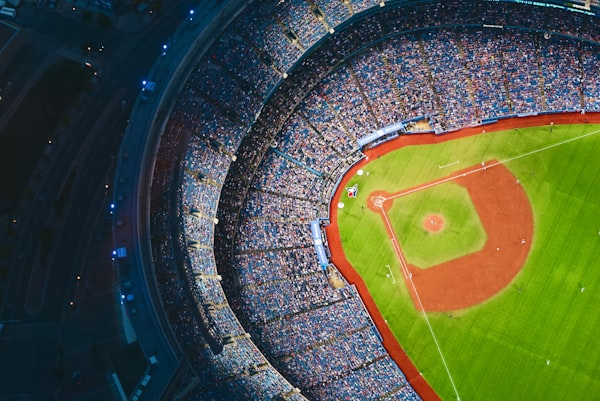
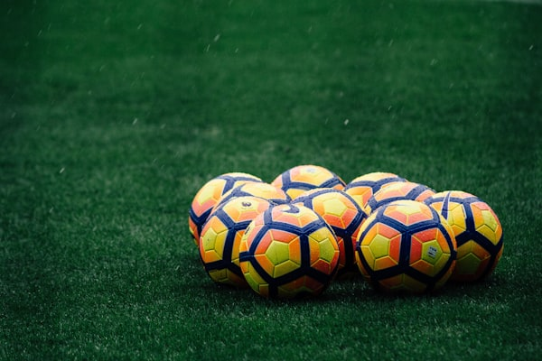
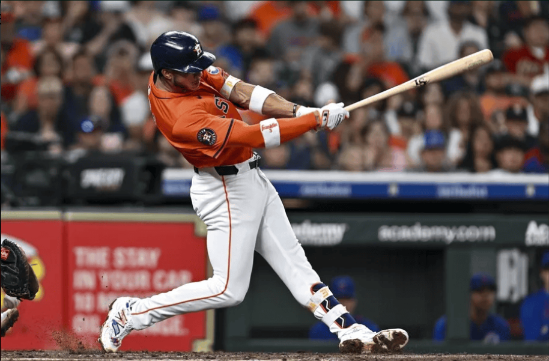

World Baseball Classic 2026
Special CoverageRepública Dominicana vs. United States — An Epic Semifinal at loanDepot Park
The dream matchup everyone wanted: the Dominican Republic's star-studded lineup faces the reigning powerhouse USA in a game featuring 52 combined All-Stars.
After eliminating Venezuela by the mercy rule in the quarterfinals with a stunning offensive performance, the Dominican Republic advanced to the World Baseball Classic 2026 semifinal against the United States. The matchup — played at loanDepot Park in Miami — was widely considered the de facto final of the tournament, with Japan having been eliminated earlier by Venezuela.
The Dominican lineup entered the game having already tied a World Baseball Classic record with 14 home runs in the tournament, demonstrating extraordinary offensive firepower led by Juan Soto, Manny Machado, Vladimir Guerrero Jr., and Fernando Tatis Jr. The Dominican pitching rotation, anchored by Sandy Alcántara and Luis Severino, also impressed throughout the competition.
(WBC Record Tied)
Both Lineups
Both Rosters
"This is not just a baseball game — it is a statement about Dominican talent on the world stage."
— ESPN Baseball Analyst, WBC Semifinal PreviewESPN analysts called it a historic matchup, describing the combined rosters as featuring 32 Silver Sluggers, 11 Gold Gloves, and five former MVPs, all still active and at the top of their game. The Dominican Republic's opener Luis Severino was named to face the American lineup in the decisive semifinal game.

Dominican players celebrate after advancing to the WBC 2026 Semifinals.
Key Dominican Players — WBC 2026
- ⚡ Juan Soto — New York Yankees
- ⚡ Vladimir Guerrero Jr. — Toronto Blue Jays
- ⚡ Fernando Tatis Jr. — San Diego Padres
- ⚡ Manny Machado — San Diego Padres
- ⚡ Sandy Alcántara — Miami Marlins
- ⚡ Luis Severino — New York Mets
- ⚡ Julio Rodríguez — Seattle Mariners
MLB — Early Season 2026
April 14, 2026
Oneil Cruz Extends 12-Game Hit Streak — Best in Major Leagues
The Dominican outfielder for the Pittsburgh Pirates continues his impressive early-season performance, leading the majors in active hitting streaks.
In his sixth MLB campaign, Cruz drove in multiple runs as Pittsburgh routed their opponents 16-5, with his consistency described by analysts as the product of improved plate discipline and a more mature approach at bat.

José Soriano Named MLB Player of the Week — Best Dominican Pitcher in the Majors
The Los Angeles Angels right-hander earned the American League Pitcher of the Week award, continuing his rise as one of the most dominant arms in baseball.
ESPN analysts named Soriano the best Dominican pitcher in the majors following a dominant stretch that included multiple shutout innings and an impressive strikeout-to-walk ratio.

Jeremy Peña Placed on 10-Day Injured List With Right Hamstring Strain
The Dominican shortstop for the Houston Astros suffered a Grade 1 hamstring strain and is expected to miss the next two weeks of action.
The Astros confirmed the injury on Monday, noting that Peña is expected to begin rehabilitation exercises immediately. The team is hopeful for a full recovery before the end of April.